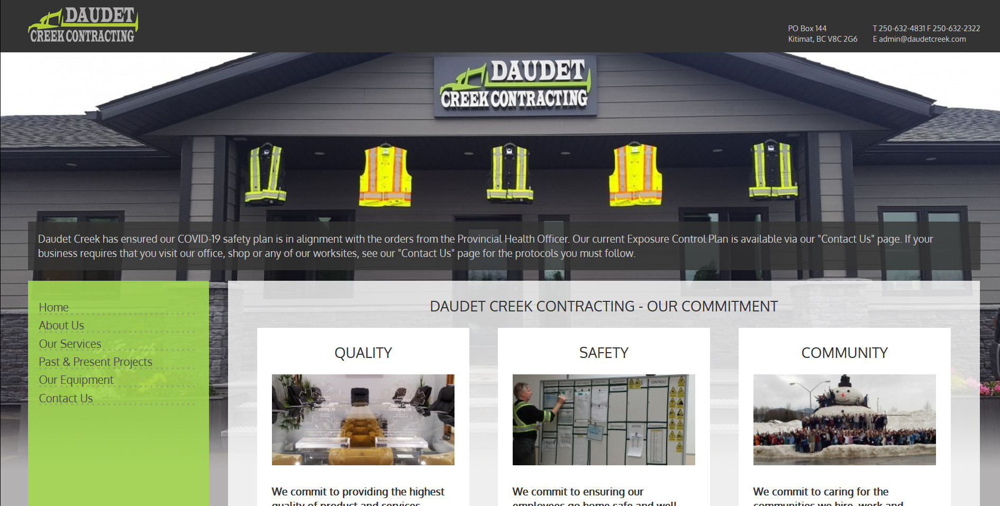
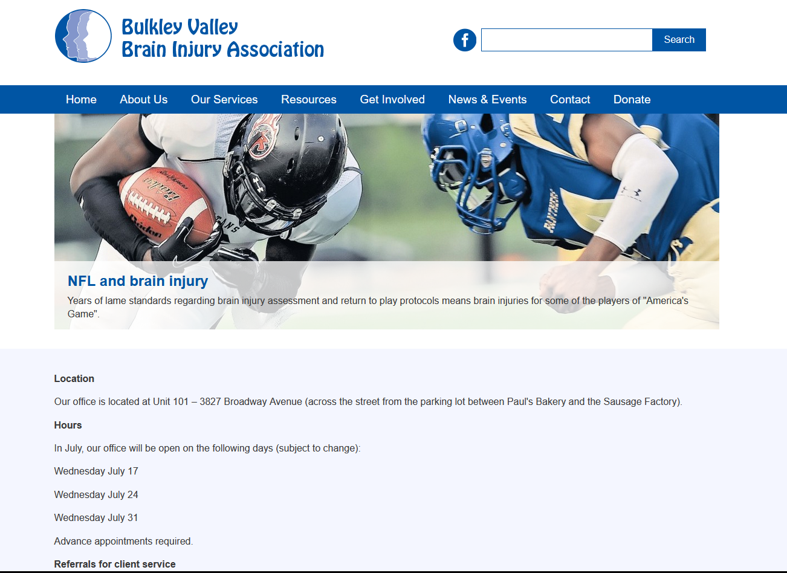
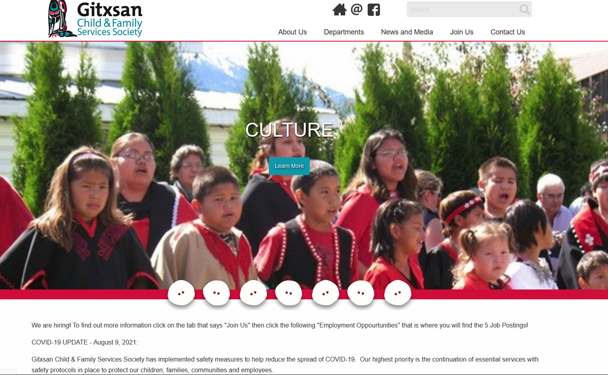
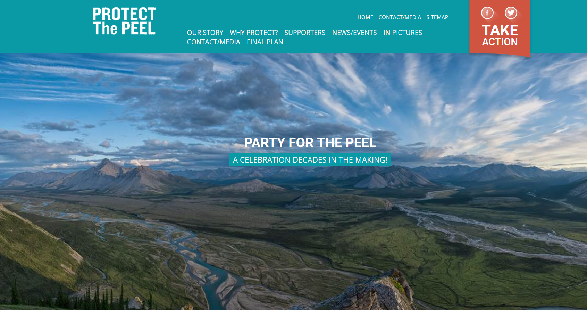
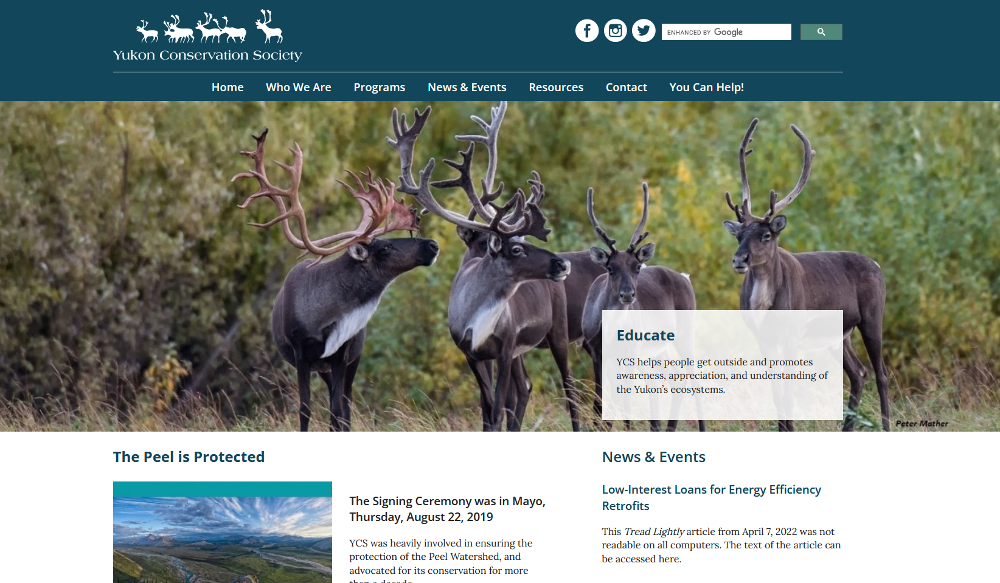

web
Protect the Peel
For Spark Design Co.
On this site I was responsible for programming the front end, and building and implementing the complete custom backend using Expression Engine CMS.
Outpost Defender is my entry into the Indie Game Maker Contest 2017, which ran from Oct 4 - Nov 5.
It is an RPG/Town Management/Surivival game where you have to manage a camp of characters and keep them alive for 12 days.
I really enjoyed making this game. I built it with RPG Maker MV, and worked on it for around 2.5 weeks (I joined the contest late). It was a short, intense development period that really pushed my design skills. It also required some rather ruthless cutting. The original plan for the game had many more features. I had intended the camp in the game to be more upgrade-able, with different buildings and fortifications, and to have more maps to explore and characters to recruit. I had to constantly re-think and cut out portions of it as I got closer to the contest deadline.
In the end, while I was able to get a playable, end-to-end experience done, portions of it are still rough and under-baked. The combat is pretty basic (most fights are just a slug fest, at least until you unlock more advanced skills), and I didn't really have time to properly test and balance the enemies.
That said, I really proud with what I managed to accomplish in the time I had, and will try to update the game after the contest judging is concluded with some fixes and improvements. One of my goals with this project was to understand how to code to the RPG Maker engine, and I feel like I definitely accomplished that. I now have a solid grasp of how to write plugins for the engine and how it works. A lot of that is thanks to the great resources and plugins that other developers have made available, which I will link to below. I could never have finished this project without them. I have a lot of thoughts on the RPG Maker MV toolset & engine as well, but I will save those for another post.
RPG Maker Resources
- Script call spreadsheet - A 'cookbook' of javascript snippets for common tasks in the engine. I used this constantly.
- API Reference - A indispensable reference to the classes and methods in the engine. This really should be shipped with RPGMaker.
- Yanfly Plugins - Some great core plugins that expand the base engine in really useful ways.
- Himeworks Party Manager - Responsible for all of the advanced party functions in the game (ie. being able to leave characters behind in camp and doing things with them when they're not in the active party)
- Szyu's Crafting System Plugin - Powers the crafting system in the game. I didn't originally plan to have a crafting system, but at some point I decided that it would be a lot simpler to use this plugin than to work out how to handle the gather/upgrade loop in the game all on my own. Really useful.
- Galvs Plugins - In the end I only used the 'Roll Credits' plugin to handle the game ending credit roll, but I experimented with some of the others. Tons of great stuff
- How to make a plugin in RPG Maker MV Video series by SumRndmDde - A great series of youtube videos on the basics of coding in RPG Maker.
- 
- 
- 
- 
- 